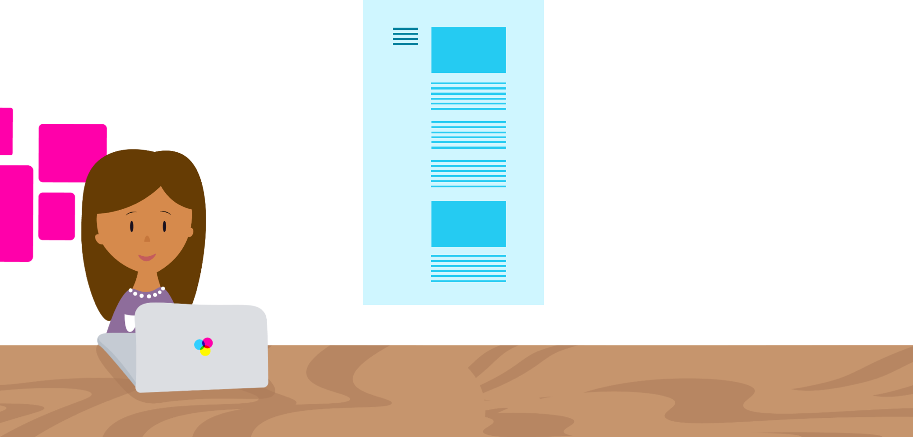
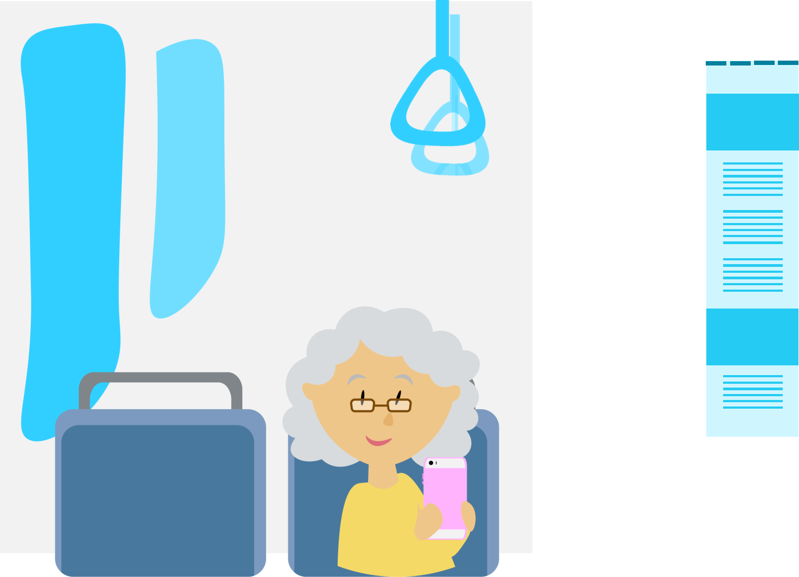
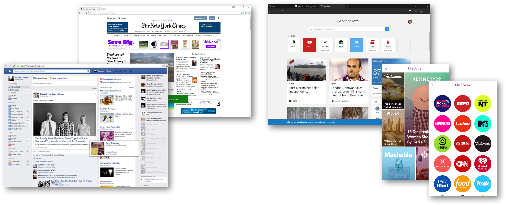
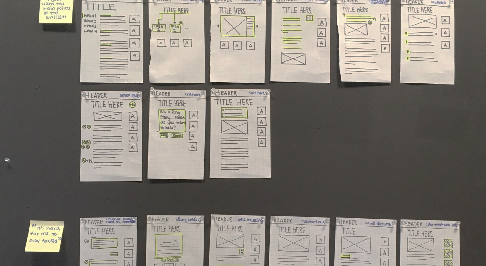
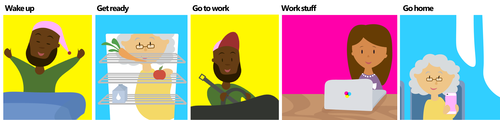
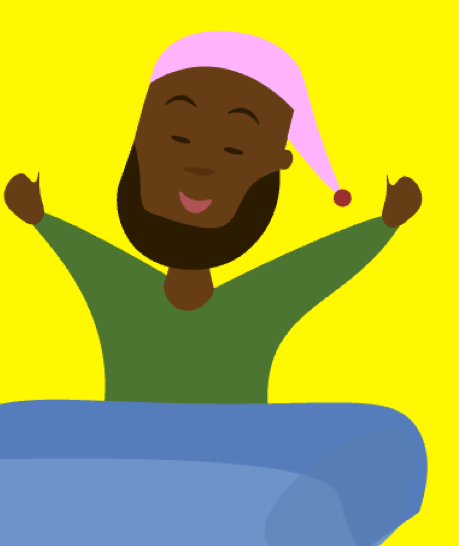
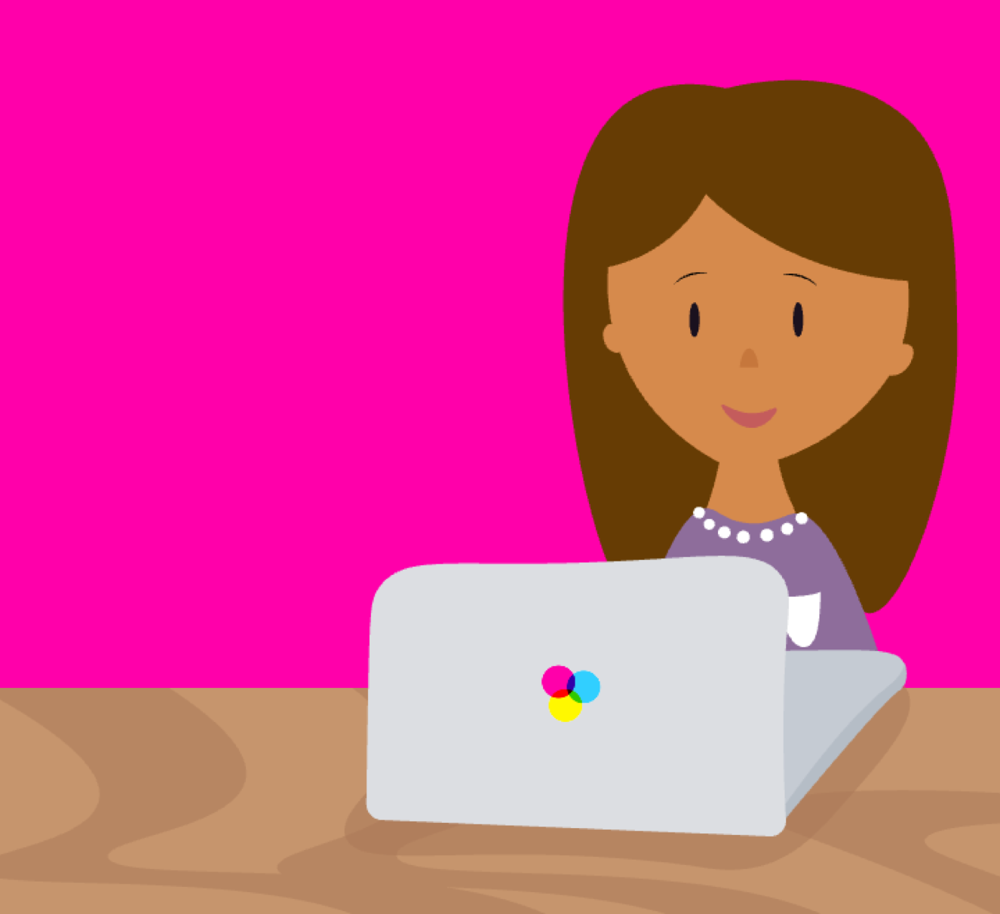

MICROSOFT
Context
Rather generally, my work focused on creating accessible and adaptable online news consumption experiences.
My summer internship at Microsoft was pretty timely; in addition to new advances in AR with the Hololens, the company had also very recently been gaining traction for its firm stance on inclusive design.
I was fortunate enough to be able to combine my Computer Science skills and interest in emerging technolgoies with my desire to explore the current state of accessibility in our online experiences!
Problem
During my initial explorations, I identified three key problems with the current online news consumption experience:
- Overwhelming UI
Typical news distribution companies have multiple stakeholders; while the company itself and its investors certainly care about quality content, financial interests can sometimes compromise well-designed experiences (ever seen a website that is 50% ads?).
Additionally, when we try to cram too much content with too much variety into a single view, the paradox of choice kicks in and our users are left unsure as to what to focus on and how to take action. - Non-inclusive design
Historically, news has been very text-heavy. Whether on a TV screen, a computer, a phone, or a tablet, most of the information that we wish to convey is through the written word.
While this may be okay for a person with lots of time on their hands, too much text is not necessarily inclusive of all people consuming news: for individuals with cognitive disabilities (e.g. ADHD, dyslexia), information is processed much faster by other means of communication! - Outdated UI
The last bit that was the most shocking to me is that the current UI for consuming news looked almost identical to the printed newspapers that were distributed in the 20th century!
While certainly not a problem by itself (I'm sure it provides the affordance of reading the news and there must be other advantages to keeping a similar interface for so long), the rise of new technologies and the ecosystem of devices that users are slowly accumulating around themselves would indicate that there may be new opportunities and behaviors which our current interfaces will not be best-suited for.
Personas
To put the current news consumption experience in a more relatable context, I created several personas to demonstrate the different environments, devices, and use cases for which people might consume news.
For a full-time lawyer, news consumption is essential to making well-informed, credible decisions - and obtaining the necessary facts should be both easy and fast, to match the fast-paced work environment that such an individual thrives in.

On the other hand, a grandma who is in transit and browsing the news on her phone will have many more distractions around her. Most probably, she doesn't even intend to read articles in their entirety! Skimming the news will be enough to give her a few talking points when she meets with her grandchildren and friends later in the day.

Thinking more futuristically, what will news consumption look like in the world of augmented and virtual reality?
Moreover, for an extremely busy individual (maybe a student, maybe a working mother, or someone with ADHD) who doesn't have time during the day to sit down and read the New York Times, how can we create a more parsable news consumption experience so that they can still reap the benefits of making better informed decisions?
Initial Research
Before diving into design, I set out to understand current state of online news consumption experiences by 1) talking to people and 2) looking at existing products.
1) Talking to people
I sent out a call for individuals who would be willing to talk to me about their online news consumption habits - and fortunately there was an enthusiastic response! Overall, I sat down and talked to over 20 people within the span of a week; of these 20, four were individuals with ADHD or dyslexia, and all people came from diverse backgrounds.
Two key insights arose from these conversations:
- Consumption Motivation
Users primarily consume news for conversational / socializing purposes. - Dissatisfaction with Current UI
Current news interfaces are distracting and cause users to lose focus and/or forget tasks
The first observation about individuals' motivations for consuming news, while very logical, still came as a surprise to me. Additionally, keeping this motivation in mind continued to influence several of my designs later on down the line. With the revelation that current news consumption tools are currently impeding users from reaching their end goal of processing and gaining information, I proceeded to the next part of research:
2) Examining existing consumption tools
Some products, like Facebook, approach news consumption from the perspective of an interpersonal standpoint by integrating their news with social media. Other products like Snapchat make use of various psychological tactics to keep their users' focus on the content at hand. Still, some others like the New York Times and Microsoft Edge's new tab page simply organize content in an intuitive manner.
Step 1:
How can we improve the accessibility and adaptability of existing news UI?
Based on my findings, I decided to first approach my designs through two constraints: firstly, online news consumption should be inclusive of and accessible to individuals with cognitive disabilities. Secondly, such an interface should be easily adaptable across different technological devices as a nod to the ecosystem of devices that we now live in.
Hypotheses
I proceeded to create two hypotheses based on two key pillars of cognitive learning: focus and memory.
- An interface that emphasizes the user's place in a given piece of news will allow for increased focus and comprehension.
- An interface that condenses information in an individual news will increase the inclusivity and accessibility of online news.
Iterations and Feedback
With these hypotheses as my starting point, I then began creating low-fidelity wireframes of UI features that addressed positionality, context, and summarization of information.

I then began weighing the pros and cons of each iteration, slowly narrowing down my designs to a handful that I proceeded to create low-fidelity prototypes of in Axure. See them in action here !
After conducting user testing to understand what was intuitive and usable - but also what was aiding people in understanding the written content, I also solicited feedback from other designers around me. The number of candidate solutions slowly lessened to a handful, which consistently gained enthusiasm from my user testers. One individual even went so far as to say, "Why does this not exist on the web yet?!".
Finally, based on the feedback I received from my prototypes and further discussions with individuals, I combined the different interface features into a single interface that serves as one potential way we might go about designing more inclusive online news consumption experiences.
The high fidelity prototypes were created in Framer JS and can be found here! TODO
I then began to think more about how I could apply the insights and learnings I had gained from the union of inclusive design and current news consumption interfaces to newer technologies.
Step 2:
How can we seamlessly integrate news consumption into people's daily activities, in the context of new technologies?
Considering how hard it is to get through a typical day even without consuming any news, I began thinking about how we could rethink the news consumption experience as an augment to individual's daily lives, rather than another obligation to be completed.
Hypothesis:
An AI-backed, contextual assistant will create a more relevant, usable news consumption experience.
I arrived at this hypothesis after some experience mapping, storyboarding, and classifying different daily actions according to the amount of cognitive load that would be required to perform each task.
One thing I found: it's hard enough to get through the day without consuming the news... so how can we make news consumption both an integrated part of what an individual is already doing, AND a positive net utility feature to an individual's day?

Solution: A contextualized, AI-backed assistant
People consume the news primarily for social interactions, as was observed during my initial research and user studies. The implication of this is that news serves as a social "crutch" of sorts that we can rely on to give us credibility and motivation to move forwards.
What if we were to apply the analogy of news as a social "crutch" to more scenarios and use cases beyond having conversations with friends, family, and coworkers? What if news could help inform us on all the decisions we make daily, and even prevent us from making grossly wrong ones?
With the rise of machine learning and artificial intelligence, it made sense to me that we could easily link and sync the events in an individual's life to the events that are happening in the world.
For example, when Albert wakes up in the morning, he is tired and groggy - and does not always have the cognitive capacity to think through everything he needs to prepare for during the day, let alone consider other options that might be more productive. Through design and AI, we can create a personal assistant that uses the news to help him think through those decisions.

As another example, perhaps Lily is at work and about to give input on an important decision -- but her contextualized assistant reads the news in real time, providing her with more context and updated information than she would have found on her own. As a result, news consumption can not only increase efficiency, but it also saves credibility - and potential millions of dollars in lawsuits.

Final Thoughts
This was a lot of information to take in! As another one of my final deliverables, I also created an online toolkit that covers many of the cognitively inclusive design principles that I uncovered during my internship project.
I'm so fortunate enough to have been able to explore so many of my interests throughout the duration of this project: inclusive design, the integration of new technologies into daily lives, illustration, and talking to people are all things that I derive a lot of enjoyment out of.
There were definitely a lot of things that I wished I could have taken a closer look at, but for the purposes of setting constraints around my work and finishing everything in the span of three months, weren't feasible to include! Some of these facets are:
- Designing better ad experiences vs. showing no ads at all
- Designing better online reading experiences for people with mobility disabilities
- Exploring the 1D space for cognitive inclusive design and news consumption
If you're interested in chatting about my work and / or inclusive design in general, I'd love to hear from you. :) Otherwise, thanks for reading!